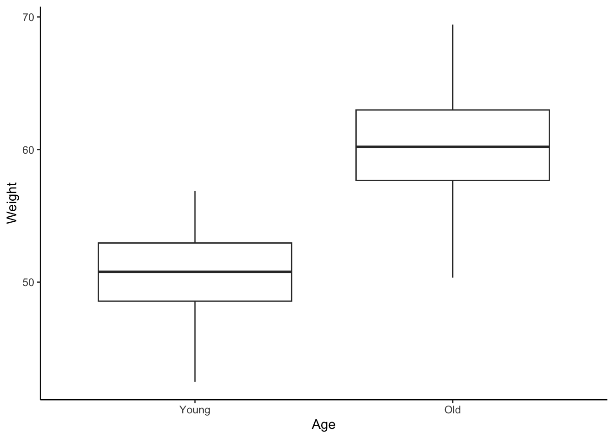
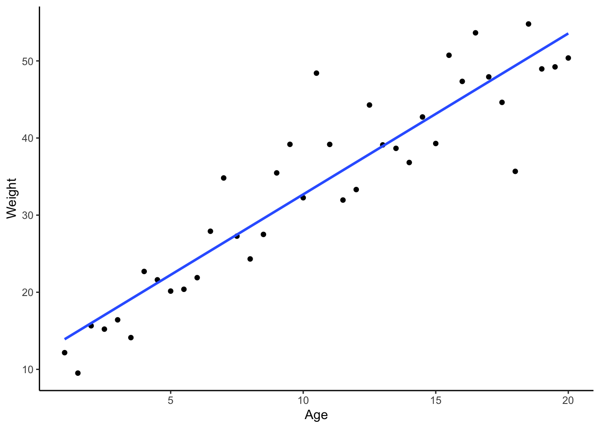

Welcome to your very first BEDA practical. Today we will help you get started by giving you a free, physical lab notebook and making sure you have all the software you need for this unit.
Things to prepare
Attend the first lecture (or watch the recording before the lab).
Bring a laptop. If you need to borrow one, let us know, there are loaners available in the lab.
Be ready to install software in the lab (R, SPSS, and/or Jamovi). Make sure your laptop has admin rights, internet access and enough space.
Learning outcomes
By the end of this session, you should be able to:
What we will cover today
We will explain to you how BEDA practicals work, what you will be doing, and how to get the most out of them. Your lecturer (probably Januar) will cover:
Code of conduct and lab rules
Lab and Handbook structure
Demonstrators and how they can help you
Attendance and feedback
2 Workshop 01
Each practical in Module 1 begins with a quick workshop. We will cover a key idea, then you will get stuck into some quick hands-on exercises in the lab. These are your chance to practise what you have heard in lectures and try out study design and data analysis for yourself.
The workshop should take about 45 minutes unless Januar gets carried away. Hopefully one of you will keep him on track, but if not, a demonstrator will be there to remind him to wrap it up.
3 Exercise 1 – Cheatsheets
This exercise introduces Cheatsheets: handy guides with common functions and commands to help you get started with new software.
Choose a cheatsheet. You could try one for a program you have never used, or pick a familiar one to see if you learn something new.
Follow the tasks on the cheatsheet. If you get stuck, please ask a friend or a demonstrator for help.
This is a good opportunity to compare different software for the same task. For example, try using both R and Jamovi to plot the same data. You might discover a new preference.
Feedback and Suggestions
Your feedback helps improve these resources. Once you have tried a cheatsheet, please use the quick feedback form on the cheatsheets page. It only takes a minute. You can also request new cheatsheets, which Januar will create as the unit progresses.
Want to help improve the cheatsheets? (Optional)
If you would like to contribute directly, we welcome your suggestions. You can:
Email Januar with your ideas.
Post on Ed to discuss your thoughts with the teaching team.
Submit a pull request on GitHub. This is more technical, but the repository link is on the cheatsheet page if you are familiar with Git.
If your contribution is accepted, you will be credited as a co-author. This is a great way to contribute to the unit’s resources and something you can mention on your CV. You can contribute at any time during the semester.
4 Exercise 2 – Introduction to models in statistics
What is the point?
One of the most important parts of study design is being able to model data. One way to do this is with plots – they are not just pretty pictures, but actually capture the heart of your study design. In this exercise, you will get to grips with what a model is and how it helps you plan and analyse experiments.
What is a model?
A model is just a simple way to represent something complicated. In data analysis, a model helps us make sense of a dataset, test ideas (hypotheses), or make predictions. Models can be as simple or as fancy as you like, depending on your data and your research question.
Soon, you will be using what is called an empirical model. It might look like a scary equation, but you do not need to be a maths genius to get the idea.
Here is an example:
\[y = \beta_0 + \beta_1 x_1 + \epsilon\]
This just means: “the value of \(y\) is equal to a constant, plus \(x_1\) times another constant, plus a bit of random error.”
But we can make it even simpler by thinking of it as a relationship:
\[y \sim x_1\]
This means: “\(y\) is influenced by \(x_1\).”
So if \(y\) is weight and \(x_1\) is age, it is:
\[\text{weight} \sim \text{age}\]
In other words, “weight depends on age.”
If you can plot it, you are already modelling it!
For now, let us focus on graphical models – in other words, plots! Plots are models because they show relationships between variables. For example, you could plot the weight of an animal species against its age or height to see if there is a pattern:
Code
set.seed(328)Weight <-c(rnorm(50, mean =50, sd =3), rnorm(50, mean =60, sd =3))Age <-c(rep("Young", 50), rep("Old", 50))# create data framedata <-data.frame(Weight, Age)# ggplotlibrary(ggplot2)ggplot(data, aes(x = Age, y = Weight)) +geom_boxplot() +theme_classic() +scale_fill_brewer(palette ="Set1") +scale_x_discrete(limits =c("Young", "Old"))

Figure 1: Weight vs Age of an animal species. Simulated data. Here, age is a categorical variable.
Interestingly, how we consider your variables can drastically change the type of plot and model used for data analysis. For example, consider the same relationship as above, but plotted differently:
Code
V_max <-70# Assume the maximum weight is 70 kgK_M <-10# Assume the Michaelis constant is 10 years# Generate age dataage <-seq(1, 20, by =0.5) # From 1 to 20 years, in 0.5 year increments# Apply the Michaelis-Menten equation to simulate weight dataweight <- V_max * age / (K_M + age) +rnorm(length(age), mean =0, sd =5)# Create a data framedata <-data.frame(Age = age, Weight = weight)# Plot using ggplot2library(ggplot2)ggplot(data, aes(x = Age, y = Weight)) +geom_point() +# Use geom_line for continuous datageom_smooth(formula = y ~ x, method ="lm", se =FALSE) +theme_classic()

Figure 2: Weight vs Age of an animal species. Simulated data. Here, age is a continuous variable.
Notice how both plots show the same kind of relationship, but the way we interpret them – and the type of model we use – is different. This is what study design and data analysis are all about: the model you choose can totally change your results, so planning ahead is key!
Get ready
MS Excel (or similar) to look at the data files
Word, Google Docs, or just pen and paper to sketch your models
R, Jamovi, SPSS, or any software you fancy for plotting
Your goal is to practise thinking like a research biologist. For this, you will choose a dataset, use that variables to formulate a research question, and sketch a graphical model to help answer your question. Remember, you do not need to analyse or process any data for this task. Simply knowing the type of variables you are working with (e.g., categorical, continuous) is enough to decide on and sketch an appropriate plot.
Explore the data. Download penguins.csv and possums.xlsx. Open them and familiarise yourself with the variables available in each dataset.
Formulate a research question and choose a model. Pick one of the datasets and think of a simple research question you could ask. Then, decide which type of plot would be the best way to visualise the answer. Here are some common plots and what they show:
Histogram: Shows the distribution of a single continuous variable. Useful for seeing the shape of your data (e.g., is it symmetrical or skewed?).
Scatterplot: Shows the relationship between two continuous variables. Ideal for spotting trends, patterns, or correlations.
Boxplot: Compares the distribution of a continuous variable across different categories. Excellent for comparing groups.
Barplot: Compares a summary statistic (like a mean or count) across different categories. Use it when you want to show the size of different groups.
Sketch your model and write down your question. In your new lab notebook, write down your research question clearly. Beneath it, sketch the plot that represents your model. For example, if your question is “How does possum weight differ between sexes?”, a boxplot would be a suitable model.
Think about your model. Consider the variables you have chosen. Why is your chosen plot suitable? Could you use a different plot if you collected the data differently? Discuss your ideas with your peers or your demonstrator.
Example
Open the possum data in Excel. Let’s think about how the weight of a possum changes with age.
What kind of variables are these? Are they continuous, categorical, or something else? With that in mind, sketch the plot(s) you think will help you understand the data. Weight is continuous and age is categorical, so a boxplot is a good start.
What if you collected age in years instead of categories? Then you could use a scatterplot. But maybe you can’t tell a possum’s exact age, so that might not be practical.
The first model would probably use a two-sample t-test, while the second could use linear regression.
A model comparing the weights of juvenile and adult possums could be shown as a boxplot or barplot. Here’s a boxplot of the possum data:
See how thinking about how to interpret the data is a big part of study design? It helps you decide what data to collect and how to analyse it. But notice – there is only one juvenile possum in the dataset, so you could not really analyse this properly!
Food for thought: Can age still be used to construct a model given that there is only one juvenile possum?
5 That is a wrap!
That is all for today! If you have any questions, just ask your demonstrators – they are here to help. Do not forget to give feedback on the cheatsheets and have a go at the exercises in your own time. See you next week for more on study design and data analysis!
6 Fancy a challenge?
This section is for those who finish early or would like extra practice at home. Use the penguins and possums datasets from this practical. Don’t forget that you are either drawing plots or writing
Penguins dataset: Create a plot to show the relationship between bill_length_mm, bill_depth_mm, and flipper_length_mm. Is it possible? What model are you constructing and can you put it into words?
Possums dataset: Investigate the relationship between body weight (BW) and the personality trait for boldness (BoldBLUP). How do Sex and Age influence this relationship? How would you model three variables together in a plot? Can you model all four of them (BW, BoldBLUP, Sex, and Age) together?